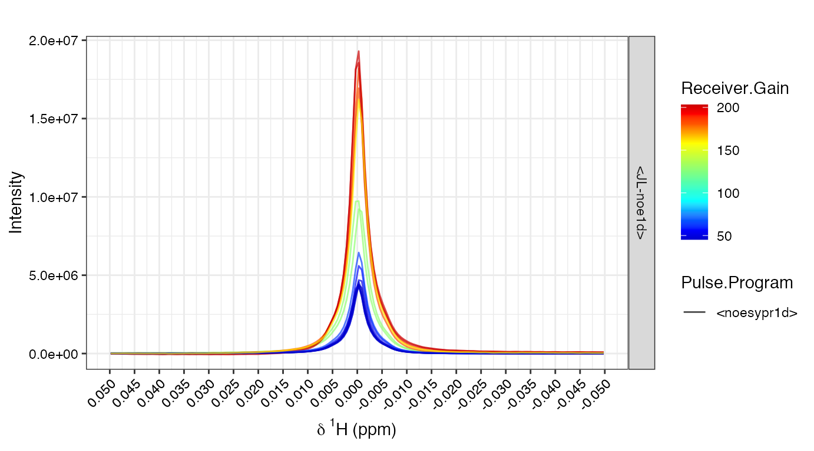
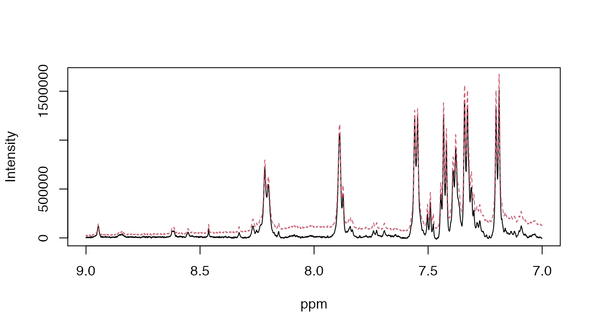
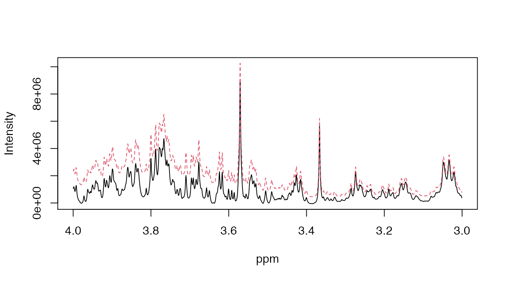
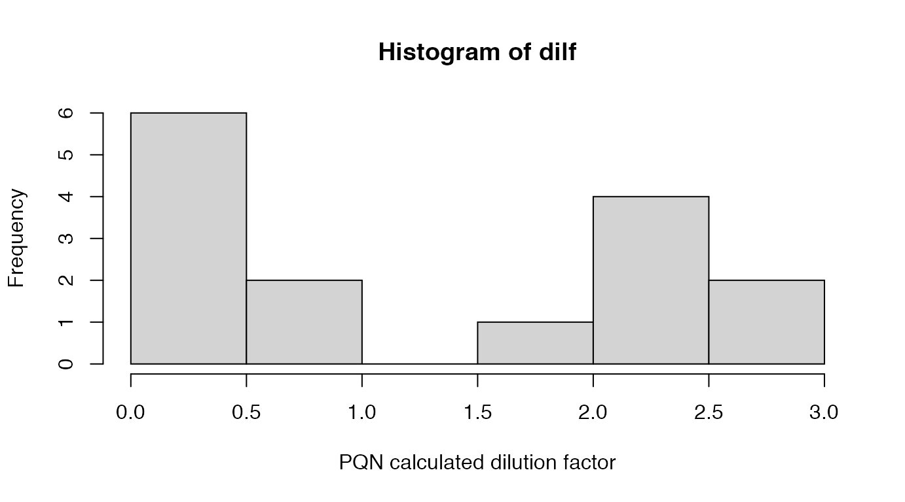

Data Import and Preprocessing
Torben Kimhofer
March 2021
PreProc.RmdData import, quality control and spectral pre-processing
This tutorial runs through a typical data import and pre-processing workflow for Magnetic Resonance spectroscopy (MRS) - based metabolic profilig with the metabom8 R package. Tutorial data are available in the nmrdata R package. Both of these packages are available on the author’s GitHub page and can be installed using the commands below.
# # obtain NMR training data from GitHub # install.packages('remotes') # remotes::install_github('tkimhofer/nmrdata') # # # install metaom8 package # remotes::install_github('tkimhofer/metabom8') # load packages library(nmrdata) library(metabom8)
Data
Proton (1H) NMR data are available in the nmrdata package (www.github.com/tkimhofer) and constitute standard 1D experiments acquired from murine urine samples. Samples were collected longitudinally with a single collection point before and multiple collection points after bariatric surgery was performed. Data acquisition was performed on a 600 MHz Bruker Avance III spectrometer, equipped with a 5 mm triple resonance (TXI) probe operating at 300 K. Further information on study design, experimental setup and data collection can be found in Jia Li et al.1
Import of NMR spectra and metadata
The read1d_proc() function imports Bruker NMR spectra into the R workspace. The function requires at minimum two input arguments, that is * path: patht ot the directory that encloses NMR experiments * exp_type: list of spectrometer parameters to select desired experiment types.
In this tutorial all standard 1D experiments are imported, the selection parameter is based on the pulse sequence name: PULPROG='noesypr1d':
# define path to NMR experiments path=system.file("extdata/", package = "nmrdata"); print(path) #> [1] "/Library/Frameworks/R.framework/Versions/4.0/Resources/library/nmrdata/extdata/" # import 1D MRS data read1d_proc(path, exp_type=list(PULPROG='noesypr1d'))
Three spectral variables are routinely imported into the R workspace upon execution of the read1d_proc() function:
The rownames of X indicate the folder location of individual experiments, which can further be used to match sample annotation data (e.g., group-memberships). The dataframe meta is row-matched to the NMR data matrix (X) and contains information relating to spectrometer acquisition and TopSpin software processing parameters, including the acquistion date. See ?read1d() for more information.
Visualisation of NMR spectra
Basic plotting
Plotting functions for visualising of NMR spectra include spec() and matspec(). spec() can be used to plot a single spectrum. matspec() can be used to overlay of multiple spectra. By default, both fuctions produce interactive line graphs based on plotly. However, due to formatting issues this tutorial will produce static graphics throughout (this is achieved by the function argument to interactive=FALSE). Please feel free to use interactive plot versions (just remove argument interactive=FALSE) as these often provide easier access to the data.
Example script for plotting NMR spectra:
# use 'spec' to plot a single pectrum, e.g., in row position 15: spec(X[15,], ppm, shift = range(ppm), interactive=F) # use 'matspec' to overlay spectra, in ppm range 0 to 10 matspec(X, ppm, shift = c(1.2, 1.7), interactive=F)


From this overview we can see that the spectral width ranges from -5 to approximately 15 ppm with the residual water signal resonating around 4.8 ppm. All 1H NMR signals are situated within the ppm range of 0 and 10, therefore both ends can be capped and this will be illustrated further below.
ggplot2
There are different higher-level plotting functions available that allow more comprehensive plot formatting. These functions are based on the ggplot2 package. One of these functions is specOverlay(), which is comparable to matspec() shown above, but enables to create different subplots (aka facetting) and to include colour scales and linetypes in a straightforward way.
Function argument an
Plot formatting usiinge colour, text labels and sub-divisions can create insight into the data. In ggplot-based plotting functions of metabom8, these formatting options are passed a list element to the function argument an. The order in which the plotting parameters are provided matters and has the form: an=list([facet], [colour], [lineype]), whereas each list element is a vector with as many elements as there are spectra (=rows) in X.
For illustration purposes, the following code plot the TSP singlet (-0.05 to 0.05 ppm) and annotate spectra with information on spectrometer metadata (found in the meta dataframe). One panel is created for each experiment type, the line colour represents the instrument run order (this is based on the acquisition a_Date) and the linetype indicates the NMR pulse program (a_PULPROG):
# create run-order based on acquistion date meta$runOrder=rank(as.POSIXct(meta$a_DATE)) # plot TSP signal specOverlay(X, ppm, shift=c(-0.05,0.05), an=list( 'Facet'=meta$a_EXP, # facet 'RunOrder'=meta$runOrder, # colour 'Pulse Program'=meta$a_PULPROG) # linetype ) # linetype

The plot above shows that two different experiment types were performed (i.e., two different panels), both based on the pulse program <noesypr1d>, which a Bruker term for a standard 90˚ pulse experiment with water pre-saturation. Experiment types labelled <> are calibration experiements and were performed before <JL-noe1D> were aqcuired (see Date information, i.e., run order).
Chemical shift calibration
Chemical shift calibration refers to a horizontal shift of an entire spectrum to place a signal of a standard compound at a defined chemical shift position. In urine metabolic profiling, the standard compound is TSP2 (usually added to the sample buffer), which gives rise to a singlet that is defined to resonate at 0 ppm.3
We can reference the urine spectra using the calibrate() function, as shown with the following code:
# perform TSP calibration X_cal=calibrate(X, ppm, type='tsp') # plot TSP after calibration matspec(X_cal, ppm, shift=c(-0.1,0.1), interactive=F)

After calibration of the urine spectra, the TSP peak apex is centered at zero ppm.
Filtering based on spectrometer parameters
For statistical analysis all caibration experiments are to be excluded and only only standard 1D experiments are kept (<JL-noe1d>). Filtering can be achieved with the folloging code:
# Exclude calibration experiments idx=grep('noe1d', meta$a_EXP) X_cal=X_cal[idx,] meta=meta[idx,] # plot TSP signal specOverlay(X_cal, ppm, shift=c(-0.05,0.05), an=list( 'Facet'=meta$a_EXP, # facet 'Receiver Gain'=meta$a_RG, # colour 'Pulse Program'=meta$a_PULPROG) # linetype ) # linetype

Assessment of spectral quality
In metabolic phenotyping and in any other field where NMR spectra are compared in a quantitative fashion, the quality of spectra is of particular importance. Spectral quality assessement includes visual inspection of the water suppresion quality, peak symmetry, spectral line widths, baseline level and stability as well as the average signal to noise (SN) ratio.
Visual assessment of spectral quality:
# calculate quality control measures matspec(X_cal, ppm, shift=c(4.5,5), interactive=F, main='Residual Water') matspec(X_cal, ppm, shift=c(9,11), interactive=F, main='LowField Cap') matspec(X_cal, ppm, shift=c(-1,1), interactive=F, main='UpField Cap')


Excision of signals
Further downstream analysis requires the excision of chemical shift regions bearing no biological or non-quantitative information. In urinary NMR analyses this includes the TSP signal, the residual water and urea signal as well as ppm regions where there is no signal but only noise.
The function get_._idx() can be used to obtain indices of the desired shift range from the ppm vector. These indices can then be further used to exclude the relevant columns in the NMR matrix and ppm vector. This is illustrated in the following code snippet.
# Indexing TSP region and upfield noise... idx_tsp=get_idx(range=c(min(ppm), 0.5), ppm) # ... water region... idx_water=get_idx(range=c(4.6, 5), ppm) # ... as well as downfield noise regions idx_noise=get.idx(range=c(9.5, max(ppm)), ppm) idx_rm=c(idx_tsp, idx_water, idx_noise) # Exision of TSP, res. water and noise regions X_cut=X_cal[,-idx_rm] ppm=ppm[-idx_rm]
Baseline correction
Macromolecules such as proteins produce broad resonances in an NMR spectrum, these are termed spectral baselines. Baseline differences across spectra can produce artifactual statistical effect, and a spectra are typcically baseline corrected to more accurate results. In metabom8, the bline() implements a non-linear baseline correction using asymetric least squares. See the exmpale below on how to apply this function.
# Baseline correction X_bl=bcor(X_cut) # visual assessment Xcompare=rbind(X_bl[1,], X_cut[1,]) matspec(Xcompare, ppm, shift = c(7, 9), interactive=F) matspec(Xcompare, ppm, shift = c(3,4), interactive=F)

The black line is the baseline corrected spectrum, the red and dotted line represents the uncorrected spectrum.
Spectral normalisation
Depending on the sample type, spectra may require normalisation prior to statistical analysis. For example, the signal strength in different urine samples can vary substantially, mainly related to the uptake of different amounts of water. Normalisation methods can account for these kind of dilution sensitivy.
There are several normalisation methods avaiable, which method is most suitable depends on the sample type and exerimental setup. Among the most commonly applied ones are Total Area (TA) normalisation and Probablistic Quotient Normalisation (PQN).4 In this tutorial, spectra are normalised with the PQN method (pqn()).
The function pqn() requires at least one input, which is the NMR matrix to be normaliseed (X_bl), the output of this function will be the PQN normalised data matrix. In the code below, there is on additional input argument provied (add_DilF = ‘dilF.pqn’), which indicates that the calculated dilution factors should be exported to the R workspace as an array named dilF.pqn. Checking the dilution factors can be very informative. For example, if pooled quality control samples were periodically included in the study run, then these should have very comparable dilution factors.
# PQN normalisation X_pqn=pqn(X_bl, add_DilF = 'dilf') # Visualising the pqn dilution coefficient / scaling factor for each spectrum hist(dilf, xlab='PQN calculated dilution factor')

The final step in this preprocessing tutorial is the visual inspection of the pre-processed NMR spectra:
matspec(X_pqn, ppm, shift = range(ppm), interactive=F) matspec(X_pqn, ppm, shift = c(1.2, 1.7), interactive=F)


Summary and further steps
1D NMR spectra were imported, quality checked and pre-processed which included referencing to TSP, baseline correction, excision of spectral areas that bear no quantitative biological information. Urinary spectra were normalised with PQN to account for different sample dilutions.
The pre-processed spectra can now be statistical interrogated, e.g., using multivariate methods Prinicpal Component Analysis (PCA) and Orthogoanl-Partial-Least Squares (O-PLS). You can find more information on this in the vignette Multivariate Statistical Analysis.
Li, Jia V., et al. (2011) Metabolic surgery profoundly influences gut microbial-host metabolic cross-talk. Gut 60.9, 1214-1223.↩
3-(trimethylsilyl)-2,2′,3,3′-tetradeuteropropionic acid↩
Dona, A.C., et al. (2014) Precision high-throughput proton NMR spectroscopy of human urine, serum, and plasma for large-scale metabolic phenotyping. Analytical Chemistry. 86.19. 9887-94.↩
Dieterly, F., (2006), Probabilistic Quotient Normalization as Robust Method to Account for Dilution of Complex Biological Mixtures. Application in 1H NMR Metabonomics, , 78.3, 4281-90↩